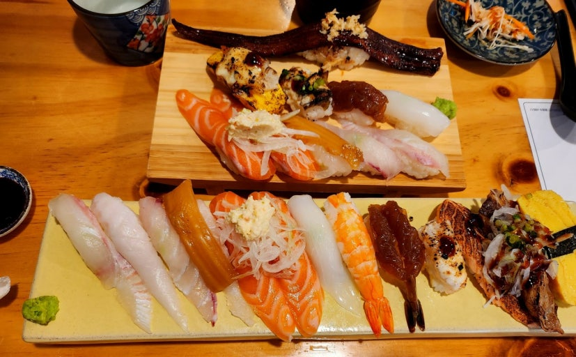

소개
"초밥" 하면 항상 비싸다는 생각이 들죠. 그런 초밥을 퀄리티는 높으면서 저렴하게 먹을 수는 없을까요? 바로 여기, "스시일기"에서 가능합니다.
신선한 생선회 : 초밥의 맛을 결정하는 건 "위에 올라간 생선회가 얼마나 신선한지"죠. 스시일기에서 사용하는 모든 생선은 당일 잡은 생선이라 비린내 없이 신선한 맛을 즐길 수 있습니다.
뛰어난 퀄리티 : 보통 가성비 초밥이라고 하면 초밥의 질이 좋지 않다는 인식이 많은데, 이곳의 초밥은 맛도 훌륭하고, 그렇다고 초밥이 작지도 않은 최고의 퀄리티를 보여줍니다.
다양한 초밥 종류 : 초밥의 종류도 다양합니다. 연어와 광어로 이루어진 활어초밥부터 새우가 올라간 새우초밥, 토치로 한 번 구운 아부리, 고기가 올라간 소고기초밥에 고급 초밥의 대명사인 참치 뱃살 초밥까지!
메뉴 추천
- 광어 + 연어 10pcs : 초밥답게 23,000원이라는 적지 않는 금액이지만, 쓴 돈에 걸맞는 신선하고 맛있는 초밥 세트입니다. 실패하지 않는 스테디셀러죠.
- 소고기 초밥 10pcs : 생선을 못 드시는 분들을 위한 메뉴입니다. 진한 육향이 느껴지는 소고기 타다키 위에 뿌려진 데리야키 소스가 최고의 궁합이예요.
- 스시일기 초밥 세트 10pcs : 20,000원이라는 가격에 소라·계란새우아부리, 장새우, 단새우안키모 등등 고퀄리티의 초밥과 가장 임팩트가 큰, 장어 한 마리가 통째로 올라가 있는 장어 초밥으로 이루어진 스시일기 시그니처 메뉴입니다.
스시일기 가는 길
주소: 경기 안산시 단원구 고잔1길 69
자가용 이용 시: 주변에 공영주차장이 있습니다. 주차 30분에 1000원으로 무료는 아니지만, 식사만 하고 이동한다면 좋은 선택입니다.
대중교통 이용 시: 중앙역에서 도보 8분으로 가까운 곳에 있습니다. 대중교통을 이용하신다면 지하철로 가는 걸 추천드려요.
초밥이라는 고급 요리를 이렇게 좋은 퀄리티로 이 가격에 먹을 수 있는 곳은 많지 않죠. 소중한 사람과 방문해서 시간을 보내고 추억을 쌓기에 안성맞춤인 듯합니다.
← 관광지 목록으로 돌아가기